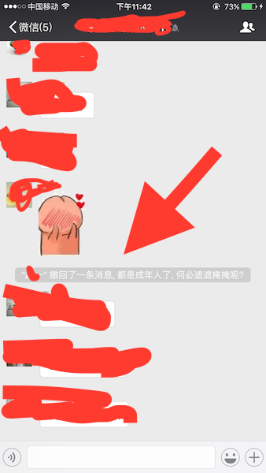
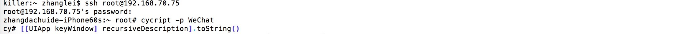
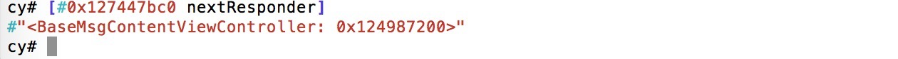
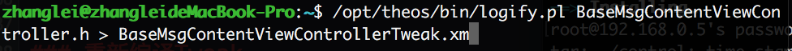
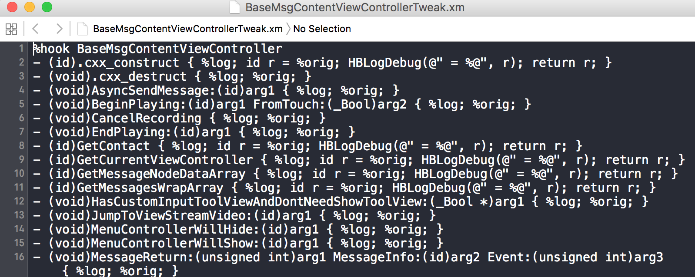
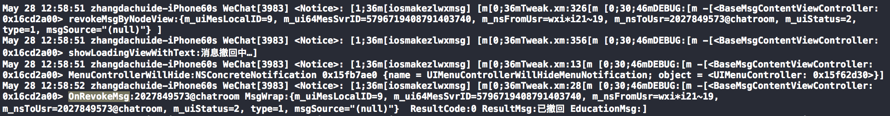
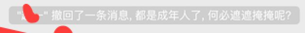
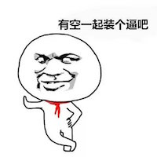

在微信群里面聊天的时候, 经常会有人一言不合就撤回消息, 怎么来防止这种恶劣的行为呢?
以下展开研究..

防撤回的图
微信的聊天数据全部存储在本地MM.sqlite里面, 所以只需要hook被撤回的方法不被执行就好了, 下面进入界面分析

链接到ssh定位到BaseMsgContentViewController.h

查看当前的控制器命令行输入 : /opt/theos/bin/logify.pl 解析的Headers.h > 生成的.xm

使用Theos logify.pl快速生成Tweak

查看在根目录底下生成的文件
查看log, 开始查找可疑方法

查看调用的方法
// BaseMsgContentViewController.h |
尝试什么事都不做, 但是数据还是被移除了, 证明BaseMsgContentViewController这个控制器接收到的信息只是为了展示数据, 通过查看方法的偏移量+App的偏移地址, 上LLDB追踪地址(这里不详细叙述)一直追到CMessageMgr.h - (void)onRevokeMsg:(id)arg1;- (void)onRevokeMsg:(id)arg1;
尝试着将onRevokeMsg方法什么事都不做.
编译运行, 发现确实可以了, 但是别人撤回了消息, 从界面来看我并不知道.
所以. 我们需要加个提醒.

加提示
撤回也就是删除一条消息的时候, CMessageMgr.h会调用DelMsg:MsgWarp:方法, 在这里进行真正的进行删除消息, 索性在这里面进行hook. 所以原来的提示将会保留.- (void)DelMsg:(id)arg1 MsgList:(id)arg2 DelAll:(BOOL)arg3;
- (void)DelMsg:(id)arg1 MsgWrap:(id)arg2;
但是, 我不想看到”xx”撤回了一条消息, 想换成其他字眼怎么办呢？
消息是CMessageWrap对象, 里面有m_nsContent对象
采用最简单最暴力的办法
创建Tweak/opt/theos/bin/nic.pl Tweak.xm….(网上太多教程这里不概述)
%hook CMessageMgr
- (void)DelMsg:(id)arg1 MsgList:(id)arg2 DelAll:(_Bool)arg3{
%log;
}
- (void)DelMsg:(id)arg1 MsgWrap:(id)arg2{
%log;
}
%end
%hook CMessageWrap
- (NSString *)m_nsContent{
NSString *content = %orig;
if ([content rangeOfString:@"撤回了一条消息"].length > 0){
NSArray *strings = @[
@", 可是被帅气机智的我瞄了一眼",
@", 但是瞒不过我犀利的双眸",
@", 都是成年人了, 何必遮遮掩掩呢?",
];
BOOL isExistsText = NO;
for (NSString *string in strings) {
if ([content rangeOfString:string].length != 0) {
isExistsText = YES;
break;
}
}
if (!isExistsText){
content = [content stringByAppendingString:strings[arc4random_uniform(strings.count)]];
}
}
return content;
}
%end
重新编译Tweak
$ make package install
然后输入ssh的密码安装

idea
当然用OpenDev生成dylib, 重签名到非越狱的机子上也是可以的~
当然有想法也可以用JSPatch来注入, 想用lua.js 也是可以尝试的~
或者hopper直接改DelMsg:MsgWarp:的汇编代码return; 也是可行的~
编译运行后, 你再查看别人撤回的消息, 然后就是上面那图的效果了~
仅供学习~ 欢迎交流.